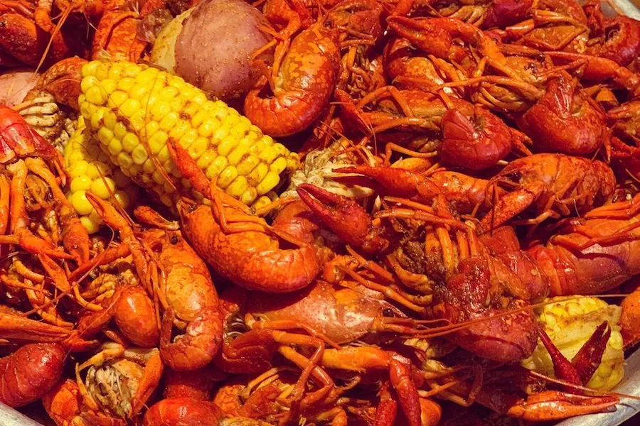

Crawfish Boil

What Is Crawfish Boil?
Crawfish boils are a time-honored tradition throughout the South. People come together several times during the season to boil pounds of the buggers and eat 'em alongside cooked potatoes, corn, garlic, and sometimes andouille sausage or other vegetables.
- Prep time 1 hr
- Total time 1 hr
- 20 servings
Ingredients
- 3 pounds yellow onions
- 6 heads garlic
- 6 lemons, halved
- 1 package (73 ounces) Zatarain's® Preseasoned Crab Boil
- 1 sack (35 to 40 pounds) live crawfish, cleaned
- 1 bunch celery, cut in bite-size pieces
- 1/4 cup Zatarain's® Concentrated Shrimp & Crab Boil
- 1 box Zatarain's® Crawfish, Shrimp & Crab Boil substitution Substitutions available
- 112 frozen mini corn-on-the-cob
How to Make Crawfish Boils
-
Fill an 80-quart crawfish boiling pot with a basket 1/3 to 1/2 with water. Place pot on a jet-style propane burner on high heat. Add onions, garlic and lemon halves. (You can use a small laundry bag for lemons and garlic. Or just leave the onions in the mesh bag they come in from the grocery with tags removed.)
-
Bring to full rolling boil. Stir in Crab Boil Complete. Add potatoes (in their mesh bag from the grocery or a laundry bag). Reduce heat to medium-low. Boil 20 minutes or until potatoes are fork-tender. Remove potatoes.
-
Return water to full rolling boil on high heat. Add crawfish, celery, liquid Crab Boil and Crab Boil bag. Return water to full rolling boil on high heat. Start checking doneness just before water returns to full rolling boil. As soon as small gaps start to appear between the head and the tail on the largest crawfish, they are done. Turn off heat. Add frozen corn and cooked potatoes. Let stand 15 minutes. Remove corn and potatoes. Let crawfish stand for a minimum of 30 minutes, but 45 minutes is better.